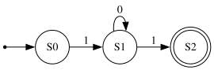
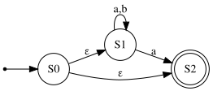
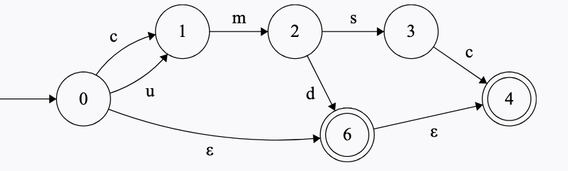
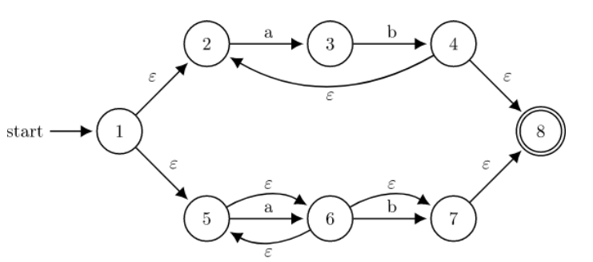
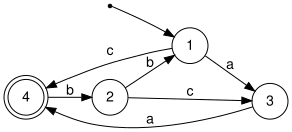
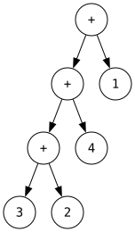

14 Exercises
14.1 Functional OCaml
Programming Language Concepts
Due to OCaml’s type constraints, you cannot make a list of functions.
Due to OCaml’s type constraints, you cannot make a list of functions.
Answer: False. You can make a list of functions in OCaml as long as they all have the same type. For example, [(fun x -> x + 1); (fun x -> x * 2)] is a valid (int -> int) list.
The = operator in OCaml performs structural (deep) comparison.
The = operator in OCaml performs structural (deep) comparison.
Answer: True. OCaml’s = operator performs deep structural equality, recursively comparing the contents of data structures. Physical equality (==) checks reference identity.
Given
let comb x lst = (x + 5)::lst
does OCaml use type inference to recognize that x must be an int?
Given
let comb x lst = (x + 5)::lstAnswer: True. The expression x + 5 uses integer addition (+), so OCaml infers x must be of type int without any explicit annotation.
Given
let comb x lst = (x + 5)::lst
is the expression comb 2 [8.0;9.0] valid? (Does OCaml perform implicit type conversion?)
Given
let comb x lst = (x + 5)::lstAnswer: False. OCaml does not perform implicit type conversion. Since x + 5 constrains x to int, comb 2 expects an int list. Passing a float list [8.0;9.0] is a type error.
fold_left’s accumulator can be a list.
fold_left’s accumulator can be a list.
Answer: True. The accumulator can be any type, including a list. For example, fold_left (fun acc x -> x :: acc) [] [1;2;3] uses a list as the accumulator.
fold_left’s accumulator can be a tuple.
fold_left’s accumulator can be a tuple.
Answer: True. The accumulator can be any type, including a tuple. For example, fold_left (fun (s, c) x -> (s + x, c + 1)) (0, 0) [1;2;3] uses a tuple to track both sum and count.
OCaml uses type inference to determine the type of variables.
OCaml uses type inference to determine the type of variables.
Answer: True. OCaml has a powerful type inference system that automatically determines the types of expressions without requiring explicit type annotations.
Functional Programming aims to decrease the amount of side effects.
Functional Programming aims to decrease the amount of side effects.
Answer: True. A core goal of functional programming is to minimize side effects by using pure functions and immutable data.
Functions are expressions in OCaml.
Functions are expressions in OCaml.
Answer: True. In OCaml, functions are first-class values and therefore expressions. You can pass them as arguments, return them from other functions, and bind them to variables.
In OCaml, all values are expressions but not all expressions are values.
In OCaml, all values are expressions but not all expressions are values.
Answer: True. Everything is an expression, but 2 + 3 is an expression that is not a value —
map (fun x -> x + 1) a will modify the list a in-place.
map (fun x -> x + 1) a will modify the list a in-place.
Answer: False. map doesn’t modify anything in place because lists are immutable in OCaml. It returns a new list.
Having mutable variables can make it hard to reason about how a program runs.
Having mutable variables can make it hard to reason about how a program runs.
Answer: True. Side effects occur when we have mutability, which can make it difficult to reason about program behavior.
A function with type int -> float -> bool returns 2 things: a float and a bool.
A function with type int -> float -> bool returns 2 things: a float and a bool.
Answer: False. Functions return only 1 thing. This function takes an int and a float and returns a bool.
A function with type int -> bool -> float could be interpreted as returning a bool -> float function.
A function with type int -> bool -> float could be interpreted as returning a bool -> float function.
Answer: True. Currying allows for this interpretation. int -> bool -> float is equivalent to int -> (bool -> float).
let f x = x + 3 is an example of a higher order function.
let f x = x + 3 is an example of a higher order function.
Answer: False. This function has type int -> int. It neither takes a function as an argument nor returns a function, so it is not a higher order function.
let f x = x 3 is an example of a higher order function.
let f x = x 3 is an example of a higher order function.
Answer: True. Because we use x as a function name (applying it to 3), OCaml infers this has type (int -> ’a) -> ’a. It takes a function as an argument, making it higher order.
An OCaml function can return different types depending on how it’s called.
An OCaml function can return different types depending on how it’s called.
Answer: False. A function can only return 1 type (or 1 polymorphic type). The return type is fixed at definition time.
let x = 3 in let x = 4 in x is an example of variable shadowing.
let x = 3 in let x = 4 in x is an example of variable shadowing.
Answer: True. This returns 4. The second let x = 4 shadows the first let x = 3. Variables are immutable, so shadowing creates a new binding rather than mutating.
let x = 3 in let y = 4 in y + x is an example of variable shadowing.
let x = 3 in let y = 4 in y + x is an example of variable shadowing.
Answer: False. There are no two variables with the same name, so no shadowing occurs.
List.length x = (List.length (List.map f x)) for all valid f and x (i.e., assume List.map f x compiles).
List.length x = (List.length (List.map f x)) for all valid f and x (i.e., assume List.map f x compiles).
Answer: True. List.map f x always produces a list of the same length as x, regardless of what f does to each element.
If fold_left f a l compiles and results in value v, then fold_right (fun x a -> f a x) l a should also result in v.
If fold_left f a l compiles and results in value v, then fold_right (fun x a -> f a x) l a should also result in v.
Answer: False. fold_left and fold_right process the list in different orders. They only produce the same result when the function f is associative and commutative (e.g., addition). For non-commutative operations like subtraction or string concatenation, the results differ.
In OCaml the entire function body is a single expression.
In OCaml the entire function body is a single expression.
Answer: True. In OCaml, a function body is always a single expression. There are no statements —
OCaml lists are immutable. List 2 benefits of immutability in functional programming.
Some benefits of immutability:
No aliasing bugs: Since data cannot be modified, sharing references is always safe. You never have to worry about one part of your code unexpectedly changing data used elsewhere.
Thread safety: Immutable data can be freely shared between threads without locks or synchronization, since no thread can modify the data.
Easier reasoning: Code is easier to understand and debug because values don’t change over time. You can always rely on a value being what it was when it was created.
What are the necessary components of a closure?
What are the necessary components of a closure?
Answer: B. A closure consists of a function (code) and an environment mapping its free variables to their values at the time the closure was created.
Multiple Choice: Typing and Evaluating
What is the type of foo and what does foo [] [1;2;3] evaluate to?
OCaml REPL
let foo x y =
match x,y with
x::xs,y::ys -> y :: xs
| _ -> [] ;;
foo [] [1;2;3] ;;
[Output]
val foo : 'a list -> 'a list -> 'a list = <fun>
- : int list = []
What is the type of foo and what does foo [] [1;2;3] evaluate to?
OCaml REPL
let foo x y = match x,y with x::xs,y::ys -> y :: xs | _ -> [] ;; foo [] [1;2;3] ;; [Output] val foo : 'a list -> 'a list -> 'a list = <fun> - : int list = []
Answer: Type is ’a list -> ’a list -> ’a list. The function pattern-matches on a tuple of two lists. When both are non-empty, it returns y :: xs. Since x = [] matches the wildcard case, the result is [].
OCaml REPL
let foo x y = match x,y with x::xs,y::ys -> y :: xs | _ -> [] ;; foo [] [1;2;3] ;; [Output] val foo : 'a list -> 'a list -> 'a list = <fun> - : int list = []
What is the type of foo and what does foo [3;6;9] evaluate to?
let foo lst = let total, _ =
fold_left
(fun (tot, idx) ele ->
(tot + ele * idx, idx + 1))
(0, 0)
lst in total;;
foo [3;6;9] ;;
What is the type of foo and what does foo [3;6;9] evaluate to?
let foo lst = let total, _ =
fold_left
(fun (tot, idx) ele ->
(tot + ele * idx, idx + 1))
(0, 0)
lst in total;;
foo [3;6;9] ;;Answer: Type is int list -> int. The fold computes a weighted sum using the index: 3*0 + 6*1 + 9*2 = 0 + 6 + 18 = 24. The accumulator is a tuple (total, index), but let total, _ = ... destructures it to return only total.
OCaml REPL
let foo lst = let total, _ = List.fold_left (fun (tot, idx) ele -> (tot + ele * idx, idx + 1)) (0, 0) lst in total;; foo [3;6;9] ;; [Output] val foo : int list -> int = <fun> - : int = 24
What is the type of foo and what does foo [] [1;2;3] evaluate to?
let foo x y =
match x,y with
x::xs,y::ys -> y :: xs
| _ -> (0,0) ;;
foo [] [1;2;3] ;;
What is the type of foo and what does foo [] [1;2;3] evaluate to?
let foo x y =
match x,y with
x::xs,y::ys -> y :: xs
| _ -> (0,0) ;;
foo [] [1;2;3] ;;Answer: TYPE ERROR. The first branch returns y :: xs (a list), but the second branch returns (0,0) (a tuple). These types are incompatible, so the match expression cannot be typed.
OCaml REPL
let foo x y = match x,y with x::xs,y::ys -> y :: xs | _ -> (0,0) ;; foo [] [1;2;3] ;; [Output] Line 4, characters 11-16: 4 | | _ -> (0,0) ;; ^^^^^ Error: This expression has type 'a * 'b but an expression was expected of type 'c list Line 1, characters 1-4: 1 | foo [] [1;2;3] ;; ^^^ Error: Unbound value foo
What is the type of foo and what does foo [7;4;23] evaluate to?
let foo lst = let total, _ =
fold_left
(fun (tot, idx) ele ->
(tot*ele*idx, idx + 1))
(0, 0)
lst in total;;
foo [7;4;23] ;;
What is the type of foo and what does foo [7;4;23] evaluate to?
let foo lst = let total, _ =
fold_left
(fun (tot, idx) ele ->
(tot*ele*idx, idx + 1))
(0, 0)
lst in total;;
foo [7;4;23] ;;Answer: Type is int list -> int, evaluates to 0. The initial accumulator is (0, 0). Since tot starts at 0 and gets multiplied (tot*ele*idx), the result stays 0 throughout: 0*7*0 = 0, 0*4*1 = 0, 0*23*2 = 0.
OCaml REPL
let foo lst = let total, _ = List.fold_left (fun (tot, idx) ele -> (tot*ele*idx, idx + 1)) (0, 0) lst in total;; foo [7;4;23] ;; [Output] val foo : int list -> int = <fun> - : int = 0
What is the type of foo and what does foo [] [1;2;3] evaluate to?
let foo x y = match x,y with
x::xs,y::ys -> y :: xs
| _ -> [9] ;;
foo [] [1;2;3] ;;
What is the type of foo and what does foo [] [1;2;3] evaluate to?
let foo x y = match x,y with
x::xs,y::ys -> y :: xs
| _ -> [9] ;;
foo [] [1;2;3] ;;Answer: Type is int list -> int list -> int list. The wildcard branch returns [9], which constrains the type to int list (not polymorphic ’a list). Since x = [] matches the wildcard, the result is [9].
OCaml REPL
let foo x y = match x,y with x::xs,y::ys -> y :: xs | _ -> [9] ;; foo [] [1;2;3] ;; [Output] val foo : int list -> int list -> int list = <fun> - : int list = [9]
What is the type of foo and what does foo [2;4;8] evaluate to?
let foo lst = let total, _ =
fold_left
(fun (tot, idx) ele ->
(tot + ele * idx, idx + 1))
(0, 0)
lst in total;;
foo [2;4;8] ;;
What is the type of foo and what does foo [2;4;8] evaluate to?
let foo lst = let total, _ =
fold_left
(fun (tot, idx) ele ->
(tot + ele * idx, idx + 1))
(0, 0)
lst in total;;
foo [2;4;8] ;;Answer: Type is int list -> int, evaluates to 20. The fold computes a weighted sum: 2*0 + 4*1 + 8*2 = 0 + 4 + 16 = 20.
OCaml REPL
let foo lst = let total, _ = List.fold_left (fun (tot, idx) ele -> (tot + ele * idx, idx + 1)) (0, 0) lst in total;; foo [2;4;8] ;; [Output] val foo : int list -> int = <fun> - : int = 20
What is the type of foo and what does foo (1,3) [1;2;3] evaluate to?
let foo x y = match x,y with
x::xs,y::ys -> y :: xs
| _ -> [] ;;
foo (1,3) [1;2;3] ;;
What is the type of foo and what does foo (1,3) [1;2;3] evaluate to?
let foo x y = match x,y with
x::xs,y::ys -> y :: xs
| _ -> [] ;;
foo (1,3) [1;2;3] ;;Answer: Type is ’a list -> ’a list -> ’a list, but the call causes a runtime error. foo expects two lists, but (1,3) is a tuple, not a list. The function itself type-checks fine, but the call foo (1,3) [1;2;3] is a type mismatch at the call site, causing an error.
OCaml REPL
let foo x y = match x,y with x::xs,y::ys -> y :: xs | _ -> [] ;; foo (1,3) [1;2;3] ;; [Output] val foo : 'a list -> 'a list -> 'a list = <fun> Line 1, characters 5-10: 1 | foo (1,3) [1;2;3] ;; ^^^^^ Error: This expression has type 'a * 'b but an expression was expected of type 'c list
What is the type of foo and what does foo [1;3;5] evaluate to?
let foo lst = let total, _ =
fold_left
(fun (tot, idx) ele ->
(tot * ele * idx, idx + 1))
(1, 0)
lst in total;;
foo [1;3;5] ;;
What is the type of foo and what does foo [1;3;5] evaluate to?
let foo lst = let total, _ =
fold_left
(fun (tot, idx) ele ->
(tot * ele * idx, idx + 1))
(1, 0)
lst in total;;
foo [1;3;5] ;;Answer: Type is int list -> int, evaluates to 0. Even though tot starts at 1, the first iteration multiplies by idx = 0: 1*1*0 = 0. After that, tot remains 0: 0*3*1 = 0, 0*5*2 = 0.
OCaml REPL
let foo lst = let total, _ = List.fold_left (fun (tot, idx) ele -> (tot * ele * idx, idx + 1)) (1, 0) lst in total;; foo [1;3;5] ;; [Output] val foo : int list -> int = <fun> - : int = 0
What is the type of f and what does f [4] [[6]] evaluate to?
let f x y = match x with
[] -> y
|x::xs -> [x]::[] ;;
f [4] [[6]] ;;
What is the type of f and what does f [4] [[6]] evaluate to?
let f x y = match x with
[] -> y
|x::xs -> [x]::[] ;;
f [4] [[6]] ;;Answer: Type is ’a list -> ’a list list -> ’a list list. The empty case returns y (a list list), and the non-empty case returns [x]::[], which is also a list list. No operations constrain the type, so it’s polymorphic. Since x = [4] is non-empty, x = 4 and we return [[4]].
OCaml REPL
let f x y = match x with [] -> y |x::xs -> [x]::[] ;; f [4] [[6]] ;; [Output] val f : 'a list -> 'a list list -> 'a list list = <fun> - : int list list = [[4]]
What is the type of f and what does f 2.0 false evaluate to?
let f a b =
if b > a then b
else a < true ;;
f 2.0 false;;
What is the type of f and what does f 2.0 false evaluate to?
let f a b =
if b > a then b
else a < true ;;
f 2.0 false;;Answer: Type is bool -> bool -> bool. The then branch returns b and the else branch returns a < true. Since a < true compares a with a bool, a : bool. Since b > a compares b with a, b : bool. The call passes 2.0 (a float) for a, which doesn’t match —
OCaml REPL
let f a b = if b > a then b else a < true ;; f 2.0 false;; [Output] val f : bool -> bool -> bool = <fun> Line 1, characters 3-6: 1 | f 2.0 false;; ^^^ Error: The constant 2.0 has type float but an expression was expected of type bool
What is the type of f and what does f [4] evaluate to?
let f x = match x with
[] -> [[3]]
|x::xs -> [x]::[] ;;
f [4];;
What is the type of f and what does f [4] evaluate to?
let f x = match x with
[] -> [[3]]
|x::xs -> [x]::[] ;;
f [4];;Answer: Type is int list -> int list list. The [[3]] in the empty case constrains the type to int. Since x = [4] is non-empty, x = 4 and we return [[4]].
OCaml REPL
let f x = match x with [] -> [[3]] |x::xs -> [x]::[] ;; f [4];; [Output] val f : int list -> int list list = <fun> - : int list list = [[4]]
What is the type of f and what does f true false (fun x y -> x > y) evaluate to?
let f a b c =
if b > a then c
else a < true ;;
f true false (fun x y -> x > y);;
What is the type of f and what does f true false (fun x y -> x > y) evaluate to?
let f a b c =
if b > a then c
else a < true ;;
f true false (fun x y -> x > y);;Answer: Type is bool -> bool -> bool -> bool. a < true forces a : bool, b > a forces b : bool, and c must match the return type bool. The call passes a function fun x y -> x > y for c, but c : bool, so this is a type error at the call site —
OCaml REPL
let f a b c = if b > a then c else a < true ;; f true false (fun x y -> x > y);; [Output] val f : bool -> bool -> bool -> bool = <fun> Line 1, characters 14-32: 1 | f true false (fun x y -> x > y);; ^^^^^^^^^^^^^^^^^^ Error: This expression should not be a function, the expected type is bool
What is the type of f and what does f [4] [[6]] evaluate to?
let f x y = match x with
[] -> y
|_::xs -> [2]::[]
|4::xs -> [4]::[];;
f [4] [[6]] ;;
What is the type of f and what does f [4] [[6]] evaluate to?
let f x y = match x with
[] -> y
|_::xs -> [2]::[]
|4::xs -> [4]::[];;
f [4] [[6]] ;;Answer: Type is int list -> int list list -> int list list. The [2] and [4] constrain the type to int. Since x = [4] is non-empty, it matches the _::xs pattern first (patterns are tried in order), returning [[2]].
OCaml REPL
let f x y = match x with [] -> y |_::xs -> [2]::[] |4::xs -> [4]::[];; f [4] [[6]] ;; [Output] Line 4, characters 5-10: 4 | |4::xs -> [4]::[];; ^^^^^ Warning 11 [redundant-case]: this match case is unused. val f : int list -> int list list -> int list list = <fun> - : int list list = [[2]]
What is the type of f and what does f true 1.3 evaluate to?
let f a b =
if b > a then (1.3 < 4.6)
else a < true ;;
f true 1.3;;
What is the type of f and what does f true 1.3 evaluate to?
let f a b =
if b > a then (1.3 < 4.6)
else a < true ;;
f true 1.3;;Answer: Type is bool -> bool -> bool. a < true forces a : bool. b > a forces b : bool. The then branch 1.3 < 4.6 is a bool expression that evaluates at function call time. The call passes 1.3 (a float) for b, which doesn’t match —
OCaml REPL
let f a b = if b > a then (1.3 < 4.6) else a < true ;; f true 1.3;; [Output] val f : bool -> bool -> bool = <fun> Line 1, characters 8-11: 1 | f true 1.3;; ^^^ Error: The constant 1.3 has type float but an expression was expected of type bool
What is the type of f and what does f [(1,2);(3,4)] [[(6,7)]] evaluate to?
let f x y = match x with
[] -> y
|x::xs -> [x]::[] ;;
f [(1,2);(3,4)] [[(6,7)]] ;;
What is the type of f and what does f [(1,2);(3,4)] [[(6,7)]] evaluate to?
let f x y = match x with
[] -> y
|x::xs -> [x]::[] ;;
f [(1,2);(3,4)] [[(6,7)]] ;;Answer: Type is ’a list -> ’a list list -> ’a list list. Same function as (a) —
OCaml REPL
let f x y = match x with [] -> y |x::xs -> [x]::[] ;; f [(1,2);(3,4)] [[(6,7)]] ;; [Output] val f : 'a list -> 'a list list -> 'a list list = <fun> - : (int * int) list list = [[(1, 2)]]
What is the type of f and what does f (fun x -> x < 1) false evaluate to?
let f a b =
if b > a then ("hello" < "bye")
else a < true ;;
f (fun x -> x < 1) false;;
What is the type of f and what does f (fun x -> x < 1) false evaluate to?
let f a b =
if b > a then ("hello" < "bye")
else a < true ;;
f (fun x -> x < 1) false;;Answer: Type is bool -> bool -> bool. a < true forces a : bool, b > a forces b : bool. The then branch "hello" < "bye" is a bool expression. The call passes a function fun x -> x < 1 for a, which doesn’t match bool —
OCaml REPL
let f a b = if b > a then ("hello" < "bye") else a < true ;; f (fun x -> x < 1) false;; [Output] val f : bool -> bool -> bool = <fun> Line 1, characters 3-19: 1 | f (fun x -> x < 1) false;; ^^^^^^^^^^^^^^^^ Error: This expression should not be a function, the expected type is bool
What is the type of f and what does f [] [1;2;3] evaluate to?
let f x y = match x with
[] -> []
|x::xs -> y :: xs ;;
f [] [1;2;3] ;;
What is the type of f and what does f [] [1;2;3] evaluate to?
let f x y = match x with
[] -> []
|x::xs -> y :: xs ;;
f [] [1;2;3] ;;Answer: Type is ’a list -> ’a -> ’a list. x is matched as a list and y is consed onto xs, so y is an element (not a list). No operations force a specific type, so it’s polymorphic. Since x = [], the first branch matches and returns [].
OCaml REPL
let f x y = match x with [] -> [] |x::xs -> y :: xs ;; f [] [1;2;3] ;; [Output] val f : 'a list -> 'a -> 'a list = <fun> - : int list list = []
What is the type of f and what does f [] [1;2;3] evaluate to?
let f x y = match x with
[] -> [1]
|x::xs -> y :: xs ;;
f [] [1;2;3] ;;
What is the type of f and what does f [] [1;2;3] evaluate to?
let f x y = match x with
[] -> [1]
|x::xs -> y :: xs ;;
f [] [1;2;3] ;;Answer: Type is int list -> int -> int list. The [1] in the first branch constrains the type to int list. The call f [] [1;2;3] passes a list [1;2;3] as y, but y has type int, so this is a type error at the call site —
OCaml REPL
let f x y = match x with [] -> [1] |x::xs -> y :: xs ;; f [] [1;2;3] ;; [Output] val f : int list -> int -> int list = <fun> Line 1, characters 6-13: 1 | f [] [1;2;3] ;; ^^^^^^^ Error: This constructor has type 'a list but an expression was expected of type int
What is the type of f and what does f [1] [1;2;3] evaluate to?
let f x y = match x with
[] -> [14]
|x::xs -> y :: xs ;;
f [1] [1;2;3] ;;
What is the type of f and what does f [1] [1;2;3] evaluate to?
let f x y = match x with
[] -> [14]
|x::xs -> y :: xs ;;
f [1] [1;2;3] ;;Answer: Type is int list -> int -> int list. The [14] constrains types to int. The call passes [1;2;3] (a list) as y, but y should be int, so this is an error at the call site.
OCaml REPL
let f x y = match x with [] -> [14] |x::xs -> y :: xs ;; f [1] [1;2;3] ;; [Output] val f : int list -> int -> int list = <fun> Line 1, characters 7-14: 1 | f [1] [1;2;3] ;; ^^^^^^^ Error: This constructor has type 'a list but an expression was expected of type int
What is the type of f and what does f 2.0 false evaluate to?
let f a b =
if b <> false then 1.0
else a + 2.0 ;;
f 2.0 false;;
What is the type of f and what does f 2.0 false evaluate to?
let f a b =
if b <> false then 1.0
else a + 2.0 ;;
f 2.0 false;;Answer: TYPE ERROR. The expression a + 2.0 tries to use the integer addition operator + with a float. In OCaml, you must use +. for float addition.
OCaml REPL
let f a b = if b <> false then 1.0 else a + 2.0 ;; f 2.0 false;; [Output] Line 3, characters 13-16: 3 | else a + 2.0 ;; ^^^ Error: The constant 2.0 has type float but an expression was expected of type int Line 1, characters 1-2: 1 | f 2.0 false;; ^ Error: Unbound value f
What is the type of f and what does f 2 "true" evaluate to?
let f a b =
if b = "false" then 1
else a + 2 ;;
f 2 "true";;
What is the type of f and what does f 2 "true" evaluate to?
let f a b =
if b = "false" then 1
else a + 2 ;;
f 2 "true";;Answer: Type is int -> string -> int. a is added to 2 so it’s int, and b is compared to the string "false" so it’s string. Since b = "true" which is not "false", the else branch runs: 2 + 2 = 4.
OCaml REPL
let f a b = if b = "false" then 1 else a + 2 ;; f 2 "true";; [Output] val f : int -> string -> int = <fun> - : int = 4
What is the type of f and what does f 2.0 false evaluate to?
let f a b =
if b > 5 then a
else true ;;
f 2.0 false;;
What is the type of f and what does f 2.0 false evaluate to?
let f a b =
if b > 5 then a
else true ;;
f 2.0 false;;Answer: Type is bool -> int -> bool. a must match the type of true, so a : bool. b is compared to 5, so b : int. The call f 2.0 false passes a float for a and a bool for b, both wrong types —
OCaml REPL
let f a b = if b > 5 then a else true ;; f 2.0 false;; [Output] val f : bool -> int -> bool = <fun> Line 1, characters 3-6: 1 | f 2.0 false;; ^^^ Error: The constant 2.0 has type float but an expression was expected of type bool
What is the type of f and what does f 2.0 false evaluate to?
let f a b =
if b > false then a
else 2.3 ;;
f 2.0 false;;
What is the type of f and what does f 2.0 false evaluate to?
let f a b =
if b > false then a
else 2.3 ;;
f 2.0 false;;Answer: Type is float -> bool -> float. a must match the type of 2.3, so a : float. b is compared to false, so b : bool. Since false > false is false, the else branch runs, returning 2.3.
OCaml REPL
let f a b = if b > false then a else 2.3 ;; f 2.0 false;; [Output] val f : float -> bool -> float = <fun> - : float = 2.3
What is the type of f and what does f (fun x -> x mod 2 = 1) [1;2;3] evaluate to?
let rec f g lst = match lst with
[] -> []
|x::xs -> (x, g x)::(f g xs) ;;
f (fun x -> x mod 2 = 1) [1;2;3] ;;
What is the type of f and what does f (fun x -> x mod 2 = 1) [1;2;3] evaluate to?
let rec f g lst = match lst with
[] -> []
|x::xs -> (x, g x)::(f g xs) ;;
f (fun x -> x mod 2 = 1) [1;2;3] ;;Answer: Type is (’a -> ’b) -> ’a list -> (’a * ’b) list. The function pairs each element x with g x. With g = fun x -> x mod 2 = 1, each element is paired with whether it’s odd.
OCaml REPL
let rec f g lst = match lst with [] -> [] |x::xs -> (x, g x)::(f g xs) ;; f (fun x -> x mod 2 = 1) [1;2;3] ;; [Output] val f : ('a -> 'b) -> 'a list -> ('a * 'b) list = <fun> - : (int * bool) list = [(1, true); (2, false); (3, true)]
What is the type of f and what does f (fun x -> x mod 2 = 0) [1;2;3] evaluate to?
let rec f g lst = match lst with
[] -> []
|x::xs -> (g x, x)::(f g xs) ;;
f (fun x -> x mod 2 = 0) [1;2;3] ;;
What is the type of f and what does f (fun x -> x mod 2 = 0) [1;2;3] evaluate to?
let rec f g lst = match lst with
[] -> []
|x::xs -> (g x, x)::(f g xs) ;;
f (fun x -> x mod 2 = 0) [1;2;3] ;;Answer: Type is (’a -> ’b) -> ’a list -> (’b * ’a) list. Note the tuple order is (g x, x), so g’s result comes first. Each element is paired with whether it’s even.
OCaml REPL
let rec f g lst = match lst with [] -> [] |x::xs -> (g x, x)::(f g xs) ;; f (fun x -> x mod 2 = 0) [1;2;3] ;; [Output] val f : ('a -> 'b) -> 'a list -> ('b * 'a) list = <fun> - : (bool * int) list = [(false, 1); (true, 2); (false, 3)]
What is the type of f and what does f (fun x -> x +. 2.0) [1.0;2.0;3.0] evaluate to?
let rec f g lst = match lst with
[] -> []
|x::xs -> (g x, x)::(f g xs) ;;
f (fun x -> x +. 2.0) [1.0;2.0;3.0];;
What is the type of f and what does f (fun x -> x +. 2.0) [1.0;2.0;3.0] evaluate to?
let rec f g lst = match lst with
[] -> []
|x::xs -> (g x, x)::(f g xs) ;;
f (fun x -> x +. 2.0) [1.0;2.0;3.0];;Answer: Type is (’a -> ’b) -> ’a list -> (’b * ’a) list. The tuple order is (g x, x). Each float has 2.0 added, and the result comes first in the pair.
OCaml REPL
let rec f g lst = match lst with [] -> [] |x::xs -> (g x, x)::(f g xs) ;; f (fun x -> x +. 2.0) [1.0;2.0;3.0];; [Output] val f : ('a -> 'b) -> 'a list -> ('b * 'a) list = <fun> - : (float * float) list = [(3., 1.); (4., 2.); (5., 3.)]
What is the type of f and what does f (fun x -> x *. 2.0) [1.0;2.0;3.0] evaluate to?
let rec f g lst = match lst with
[] -> []
|x::xs -> (x, g x)::(f g xs) ;;
f (fun x -> x *. 2.0) [1.0;2.0;3.0];;
What is the type of f and what does f (fun x -> x *. 2.0) [1.0;2.0;3.0] evaluate to?
let rec f g lst = match lst with
[] -> []
|x::xs -> (x, g x)::(f g xs) ;;
f (fun x -> x *. 2.0) [1.0;2.0;3.0];;Answer: Type is (’a -> ’b) -> ’a list -> (’a * ’b) list. The tuple order is (x, g x). Each float is doubled by g, and the original comes first in the pair.
OCaml REPL
let rec f g lst = match lst with [] -> [] |x::xs -> (x, g x)::(f g xs) ;; f (fun x -> x *. 2.0) [1.0;2.0;3.0];; [Output] val f : ('a -> 'b) -> 'a list -> ('a * 'b) list = <fun> - : (float * float) list = [(1., 2.); (2., 4.); (3., 6.)]
What is the type of foo and what does foo [1;2;3;4;5] evaluate to?
let rec foo lst =
match lst with
h1::h2::t -> h2 :: h1 :: foo t
| _ -> lst;;
foo [1;2;3;4;5];;
What is the type of foo and what does foo [1;2;3;4;5] evaluate to?
let rec foo lst =
match lst with
h1::h2::t -> h2 :: h1 :: foo t
| _ -> lst;;
foo [1;2;3;4;5];;Answer: Type is ’a list -> ’a list. It swaps adjacent pairs of elements. foo [1;2;3;4;5] evaluates to [2;1;4;3;5]. The first pair 1,2 becomes 2,1, the second pair 3,4 becomes 4,3, and 5 is left as-is by the wildcard case.
OCaml REPL
let rec foo lst = match lst with h1::h2::t -> h2 :: h1 :: foo t | _ -> lst;; foo [1;2;3;4;5];; [Output] val foo : 'a list -> 'a list = <fun> - : int list = [2; 1; 4; 3; 5]
What is the type of foo and what does the call evaluate to?
let foo f x = f (f x);;
foo (fun x -> [List.length x]) [3;6;9];;
What is the type of foo and what does the call evaluate to?
let foo f x = f (f x);;
foo (fun x -> [List.length x]) [3;6;9];;Answer: Type of foo is (’a -> ’a) -> ’a -> ’a. Since f (f x) requires the output type of f to match its input type. Here f = fun x -> [List.length x] has type int list -> int list (unifying ’a = int). So f [3;6;9] = [3], then f [3] = [1]. The result is [1].
OCaml REPL
let foo f x = f (f x);; foo (fun x -> [List.length x]) [3;6;9];; [Output] val foo : ('a -> 'a) -> 'a -> 'a = <fun> - : int list = [1]
What is the type of the following function?
let f a b = if b then a else (a+1)
What is the type of the following function?
let f a b = if b then a else (a+1)Answer: int -> bool -> int. The else branch is ‘a+1‘, which implies ‘a‘ must be an integer. The if condition ‘b‘ must be a boolean. The function returns an integer.
What does the following code evaluate to?
let x = 3 in let x = 4 in x * x
What does the following code evaluate to?
let x = 3 in let x = 4 in x * xAnswer: 16. The ‘let x = 4‘ shadows the ‘let x = 3‘. So ‘x‘ is 4, and ‘x * x‘ is 16.
What is the type of ‘fold‘?
let rec fold f acc l =
match l with
| [] -> acc
| h::t -> fold f (f acc h) t
What is the type of ‘fold‘?
let rec fold f acc l =
match l with
| [] -> acc
| h::t -> fold f (f acc h) tAnswer: (’a -> ’b -> ’a) -> ’a -> ’b list -> ’a. This is the standard definition of ‘fold_left‘. The accumulator ‘acc‘ has type ‘’a‘, the list elements have type ‘’b‘, and the function ‘f‘ takes the accumulator and a list element and returns a new accumulator.
What is the type of the following OCaml expression?
let x = 3::[1;2]
What is the type of the following OCaml expression?
let x = 3::[1;2]Answer: int list. The ‘::‘ operator prepends an element to a list. Since ‘3‘ is an ‘int‘ and ‘[1;2]‘ is an ‘int list‘, the result is an ‘int list‘.
What is the value of the following OCaml expression?
let x = 1 in let y = 2 in let x = 3 in x + y
What is the value of the following OCaml expression?
let x = 1 in let y = 2 in let x = 3 in x + yAnswer: 5. The innermost ‘let x = 3‘ shadows the outer ‘let x = 1‘. The expression ‘x + y‘ therefore evaluates to ‘3 + 2‘, which is 5.
What is the value of the following OCaml expression?
let f x = x + 1 in let g = f in g (f 2)
What is the value of the following OCaml expression?
let f x = x + 1 in let g = f in g (f 2)Answer: 4. ‘f 2‘ evaluates to ‘2 + 1 = 3‘. ‘g‘ is an alias for ‘f‘, so ‘g (f 2)‘ is ‘f(3)‘, which evaluates to ‘3 + 1 = 4‘.
What is the type of the following OCaml expression?
let f x y = if x then y else x
What is the type of the following OCaml expression?
let f x y = if x then y else xAnswer: bool -> bool -> bool. The ‘if‘ condition ‘x‘ must be a ‘bool‘. Since the ‘else‘ branch returns ‘x‘, the return type of the function must also be ‘bool‘. The ‘then‘ branch returns ‘y‘, so ‘y‘ must also be of type ‘bool‘.
Which of the following is equivalent to mapping a function ‘f‘ over a list and then summing the result, all in OCaml?
Which of the following is equivalent to mapping a function ‘f‘ over a list and then summing the result, all in OCaml?
Answer: Both Option 1 and Option 3 are correct.
What is the type of the following OCaml expression?
let rec z lst = match lst with [] -> 0 | a::b -> a + z b;;
What is the type of the following OCaml expression?
let rec z lst = match lst with [] -> 0 | a::b -> a + z b;;Answer: ‘int list -> int‘. The function takes an integer list as input, and returns the sum of the integers in the list. Thus it returns an integer.
What is the value of the following OCaml expression?
let a = 1 in let b = 2 in let a = a + b in a * b
What is the value of the following OCaml expression?
let a = 1 in let b = 2 in let a = a + b in a * bAnswer: 6. ‘a‘ is first assigned ‘1‘, and ‘b‘ is assigned ‘2‘. Then, ‘a‘ is reassigned to the value of ‘a + b‘, which is ‘1 + 2 = 3‘. Finally, the expression evaluates ‘a * b = 3 * 2 = 6‘.
What is the type of the following OCaml expression?
[[1.0];[2.0;3.0]]
What is the type of the following OCaml expression?
[[1.0];[2.0;3.0]]Answer: float list list. Each inner list contains floats, making them float list. The outer list contains float lists, giving float list list.
What is the type of the following OCaml expression?
let f (x::_) = x;;
What is the type of the following OCaml expression?
let f (x::_) = x;;Answer: ’a list -> ’a. The pattern (x::_) matches the head of any list. Since x is unconstrained, the result is polymorphic ’a list -> ’a. (A warning is produced for incomplete pattern matching since [] is unhandled.)
The function sumSmall lst x recursively sums elements of lst strictly less than x. What does the following evaluate to?
sumSmall [1;2;1;4;2;3] 3
The function sumSmall lst x recursively sums elements of lst strictly less than x. What does the following evaluate to?
sumSmall [1;2;1;4;2;3] 3Answer: 6. The elements of [1;2;1;4;2;3] strictly less than 3 are 1, 2, 1, and 2. Their sum is 1 + 2 + 1 + 2 = 6.
Which of the following correctly implements timesThree using map, taking a float list and returning a list with each element multiplied by 3?
Which of the following correctly implements timesThree using map, taking a float list and returning a list with each element multiplied by 3?
Answer: let timesThree lst = List.map (fun x -> x *. 3.0) lst. The anonymous function multiplies each float element by 3.0 using the float multiplication operator *.
What does comb 2 produce?
let comb x lst = (x + 5)::lst
What does comb 2 produce?
let comb x lst = (x + 5)::lstAnswer: A closure that captures x = 2. Partial application of comb with x = 2 returns a function waiting for lst, with x bound to 2 in the closure’s environment.
Which of the following is NOT true about OCaml?
Which of the following is NOT true about OCaml?
Answer: It does not have garbage collection. OCaml DOES have automatic garbage collection. The other three statements are all true about OCaml.
Which OCaml feature helps reduce the probability of errors occurring at runtime?
Which OCaml feature helps reduce the probability of errors occurring at runtime?
Answer: Static Typing. Static typing catches type errors at compile time before the program runs, reducing the chance of runtime errors.
What is a typical advantage of a compiled language over an interpreted language?
What is a typical advantage of a compiled language over an interpreted language?
Answer: Improved performance. Compiled languages are translated to machine code ahead of time, which typically runs faster than interpreted code translated at runtime.
What is r bound to at the end of the following OCaml code?
let v = 2;;
let f a b = a * b;;
let f' = f v;;
let v = 5;;
let r = (f' 10, f v 10);;
What is r bound to at the end of the following OCaml code?
let v = 2;;
let f a b = a * b;;
let f' = f v;;
let v = 5;;
let r = (f' 10, f v 10);;Answer: (20, 50). f’ closes over v = 2 (before rebinding), so f’ 10 = 2 * 10 = 20. After let v = 5, f v 10 = f 5 10 = 5 * 10 = 50.
Using the standard left fold, what does the following evaluate to?
fold (fun (a1,a2) v -> (a1 + v*2, a2 + v/2)) (0,0) [2;4;7]
Using the standard left fold, what does the following evaluate to?
fold (fun (a1,a2) v -> (a1 + v*2, a2 + v/2)) (0,0) [2;4;7]Answer: (26, 6). Steps: (0,0) with 2 -> (4,1); (4,1) with 4 -> (12,3); (12,3) with 7 -> (26,6). Note: 7/2 = 3 (integer division in OCaml).
What is r bound to at the end of the following OCaml code?
let rec apply_two d f1 f2 = f2 (f1 d);;
let data = [1;2;3];;
let r = apply_two data (map (fun x->10*x)) (fold (fun a x->a+x) 100);;
What is r bound to at the end of the following OCaml code?
let rec apply_two d f1 f2 = f2 (f1 d);;
let data = [1;2;3];;
let r = apply_two data (map (fun x->10*x)) (fold (fun a x->a+x) 100);;Answer: 160. map multiplies each element: [10;20;30]. Then fold sums starting at 100: 100+10+20+30 = 160.
What is the type of the following OCaml expression?
[("root",[1]); ("ahh",[2]); ("bay",[3]); ("gah",[4])]
What is the type of the following OCaml expression?
[("root",[1]); ("ahh",[2]); ("bay",[3]); ("gah",[4])]Answer: (string * int list) list. Each element is a pair (string, int list), and the outer structure is a list of such pairs.
What is the type of the following OCaml function?
let f huh nee du = (huh (nee du)) > du
What is the type of the following OCaml function?
let f huh nee du = (huh (nee du)) > duAnswer: (’a -> ’b) -> (’b -> ’a) -> ’b -> bool. nee : ’b -> ’a requires du : ’b. huh : ’a -> ’b gives huh (nee du) : ’b. Comparing ’b > ’b returns bool.
What happens when you evaluate the following (using the standard map and left fold)?
let transform lst f =
let lst' = map f lst in
fold (fun a e -> a + " " + e) "" lst'
transform [3;9;6] (fun e -> string_of_int e)
What happens when you evaluate the following (using the standard map and left fold)?
let transform lst f =
let lst' = map f lst in
fold (fun a e -> a + " " + e) "" lst'
transform [3;9;6] (fun e -> string_of_int e)Answer: Type error. OCaml uses ’^’ for string concatenation, not ’+’. Using ’+’ with strings causes a type error at compile time.
What does the following OCaml expression evaluate to?
let rec exp x y = match x with
| [] -> []
| h::t -> if y then h::(exp t (not y)) else exp t (not y)
exp [1;2;3;4;5;6;7;8] false
What does the following OCaml expression evaluate to?
let rec exp x y = match x with
| [] -> []
| h::t -> if y then h::(exp t (not y)) else exp t (not y)
exp [1;2;3;4;5;6;7;8] falseAnswer: [2; 4; 6; 8]. y starts as false (skip), then alternates: skip 1, keep 2, skip 3, keep 4, skip 5, keep 6, skip 7, keep 8.
What does the following OCaml expression evaluate to?
let f a b c d =
let t = a b c in
d t a
f (fun x y -> x*y) 2 3 (fun x y -> y x x)
What does the following OCaml expression evaluate to?
let f a b c d =
let t = a b c in
d t a
f (fun x y -> x*y) 2 3 (fun x y -> y x x)Answer: 36. t = a b c = (fun x y -> x*y) 2 3 = 6. d t a = (fun x y -> y x x) 6 (fun x y -> x*y) = (fun x y -> x*y) 6 6 = 36.
What does the following OCaml expression evaluate to?
let mystery list =
let rec aux acc = function
| [] -> acc
| h::t -> aux (h::acc) t
in aux [] list
mystery ["a"; "b"; "c"]
What does the following OCaml expression evaluate to?
let mystery list =
let rec aux acc = function
| [] -> acc
| h::t -> aux (h::acc) t
in aux [] list
mystery ["a"; "b"; "c"]Answer: ["c"; "b"; "a"]. mystery reverses a list using a tail-recursive accumulator. Each head is prepended to acc, reversing the order.
Given the following AST type, what does eval_ast (Sum(Sum(Num(3),Num(4)),Double(Num(8)))) evaluate to?
type ast =
| Sum of ast * ast (* adds two sides *)
| Double of ast (* doubles child node *)
| Num of int (* integer value *)
Given the following AST type, what does eval_ast (Sum(Sum(Num(3),Num(4)),Double(Num(8)))) evaluate to?
type ast =
| Sum of ast * ast (* adds two sides *)
| Double of ast (* doubles child node *)
| Num of int (* integer value *)Answer: 23. Sum(Num(3),Num(4)) = 3+4 = 7. Double(Num(8)) = 2*8 = 16. Sum(7, 16) = 23.
Write an OCaml function called foo equivalent to the following, simplified to take one argument: let foo = (fun a b c -> a * c + b) 7 3
Outline: let foo c = ____________
let foo = (fun a b c -> a * c + b) 7 3Answer:
let foo c = 7 * c + 3What is the type of function f, given that f 3 9.4 returns (6, true)?
What is the type of function f, given that f 3 9.4 returns (6, true)?
Answer: int -> float -> int * bool. The first argument is 3 (int), the second is 9.4 (float), and the result is a pair of int and bool. Implementation:
let f x y = (3 + x, y = 9.4)Identify and fix the type error below. Expected: f [9;8;7] [4;1] returns [1;9;8;7], f [5;6;7] [10;11;12;13] returns [11;12;13;5;6;7].
let f a b =
match b with
| [] -> failwith "error"
| x::y -> if x > 3 then y::a else b;;Answer: y and a are both int list, so y::a is a type error (:: expects an element on the left, not a list). Change y::a to y@a.
Explain the type error in this function intended to count occurrences of target in lst:
let rec count_occ lst target =
match lst with
| [] -> []
| h :: t -> (if h = target then 1 else 0) + count_occ t targetAnswer: The first branch returns [] (an empty list) but the second returns an integer — a type conflict. Fix it by changing [] -> [] to [] -> 0.
Complete sec_to_last, which returns the second-to-last element of a list:
let rec sec_to_last lst =
match lst with
| ____A____ -> ____B____
| h::t -> ____C____
| _ -> failwith "Not enough elements!"Answer: Blank A: [a;b] (or a::b::[]). Blank B: a. Blank C: sec_to_last t.
Complete count using fold to count occurrences of elem in lst:
let count elem lst =
fold (fun a x -> if x = elem then ___A___ else ___B___) ___C___ lstAnswer: Blank A: a + 1. Blank B: a. Blank C: 0.
Define is_mod_fibonacci : int list -> bool, which returns true if every element is the sum of the two preceding elements, and true for lists with fewer than 3 elements. Examples: is_mod_fibonacci [0;1;1;2;3;5;8] = true, is_mod_fibonacci [7;8;13;45] = false.
Answer:
let rec is_mod_fibonacci lst =
match lst with
| a::b::c::d -> (c = a + b) && is_mod_fibonacci (b::c::d)
| _ -> trueFill in blanks A–E to complete count_threes : int list list -> int, which counts 3’s in a list of int lists. Examples: count_threes [[1;2;3];[3;3]] = 3, count_threes [] = 0.
let count_threes lst =
fold_left (fun ____A____ -> ____B____) 0
(____C____ (fun ____D____ -> ____E____) [] lst)Answer: Blank A: a x. Blank B: if x = 3 then a + 1 else a. Blank C: fold_left. Blank D: a x. Blank E: a@x.
Expression Typing
Write an expression that would have the type int list -> ’a -> ’a -> bool.
Write an expression that would have the type int list -> ’a -> ’a -> bool.
OCaml REPL
fun x y z -> match x with |h::t -> (if h = 0 then y = z else false) |[] -> true;; [Output] - : int list -> 'a -> 'a -> bool = <fun>
Write an expression that would have the type (int -> ’a) -> int -> int * ’a list.
Write an expression that would have the type (int -> ’a) -> int -> int * ’a list.
OCaml REPL
fun f a -> (a + 1, [f a]);; [Output] - : (int -> 'a) -> int -> int * 'a list = <fun>
Write an expression that would have the type (’a -> ’b) -> ’a -> ’b -> bool.
Write an expression that would have the type (’a -> ’b) -> ’a -> ’b -> bool.
OCaml REPL
fun x y z -> (x y) = z;; [Output] - : ('a -> 'b) -> 'a -> 'b -> bool = <fun>
Write an expression that would have the type float -> float -> bool -> float list.
Write an expression that would have the type float -> float -> bool -> float list.
OCaml REPL
fun x y z -> if z then [x +. 1.0] else [y];; [Output] - : float -> float -> bool -> float list = <fun>
Write an expression that would have the type (int * ’a) -> (bool -> ’a) -> ’a.
Write an expression that would have the type (int * ’a) -> (bool -> ’a) -> ’a.
OCaml REPL
fun (a, b) c -> if a + 1 = 2 then b else c true;; [Output] - : int * 'a -> (bool -> 'a) -> 'a = <fun>
Write an expression that would have the type int list -> int -> bool list.
Write an expression that would have the type int list -> int -> bool list.
OCaml REPL
fun x y -> match x with |h::t -> [h + 1 = y] |[] -> [false];; [Output] - : int list -> int -> bool list = <fun>
Write an expression that would have the type ’a -> ’b list -> ’a -> ’a * ’a.
Write an expression that would have the type ’a -> ’b list -> ’a -> ’a * ’a.
OCaml REPL
fun x y z -> if y = [] && x = z then (x, z) else (x, z);; [Output] - : 'a -> 'b list -> 'a -> 'a * 'a = <fun>
Write an expression that would have the type ’a -> ’a -> bool list.
Write an expression that would have the type ’a -> ’a -> bool list.
OCaml REPL
fun a b -> [a = b];; [Output] - : 'a -> 'a -> bool list = <fun>
Write an expression that would have the type (’a -> ’a) -> ’a -> int.
Write an expression that would have the type (’a -> ’a) -> ’a -> int.
OCaml REPL
fun f a -> if (f a) = a then 3 else 5;; [Output] - : ('a -> 'a) -> 'a -> int = <fun>
Write an expression that would have the type float -> ’a -> (’a * float).
Write an expression that would have the type float -> ’a -> (’a * float).
OCaml REPL
fun a b -> (b, a +. 2.);; [Output] - : float -> 'a -> 'a * float = <fun>
Write an expression that would have the type string -> ’a -> (’a * float * ’a).
Write an expression that would have the type string -> ’a -> (’a * float * ’a).
OCaml REPL
fun s a -> (a, (float_of_string s), a);; [Output] - : string -> 'a -> 'a * float * 'a = <fun>
Write an expression that would have the type bool -> int -> (bool * int) list.
Write an expression that would have the type bool -> int -> (bool * int) list.
OCaml REPL
fun b i -> [b > true, i + 3];; [Output] - : bool -> int -> (bool * int) list = <fun>
Write an expression that would have the type (int -> ’a) -> ’b -> ’a.
Write an expression that would have the type (int -> ’a) -> ’b -> ’a.
OCaml REPL
fun f a -> f 3;; [Output] - : (int -> 'a) -> 'b -> 'a = <fun>
Write an expression that would have the type (’a -> ’b) -> ’a -> ’b.
Write an expression that would have the type (’a -> ’b) -> ’a -> ’b.
OCaml REPL
fun f b -> f b;; [Output] - : ('a -> 'b) -> 'a -> 'b = <fun>
Write an expression that would have the type (’a -> ’b -> ’c) -> ’a -> ’b -> ’c.
Write an expression that would have the type (’a -> ’b -> ’c) -> ’a -> ’b -> ’c.
OCaml REPL
fun f a b -> f a b;; [Output] - : ('a -> 'b -> 'c) -> 'a -> 'b -> 'c = <fun>
Write an OCaml expression of type int list -> int -> int, without type annotations and without non-exhaustive pattern matching.
Write an OCaml expression of type int list -> int -> int, without type annotations and without non-exhaustive pattern matching.
OCaml REPL
fun a b -> let _ = b :: a in b + 1;; [Output] - : int list -> int -> int = <fun>
Write an OCaml expression of type ’a list -> ’b -> ’b list, without type annotations and without non-exhaustive pattern matching.
Write an OCaml expression of type ’a list -> ’b -> ’b list, without type annotations and without non-exhaustive pattern matching.
OCaml REPL
fun a b -> if a = [] then [b] else [b];; [Output] - : 'a list -> 'b -> 'b list = <fun>
The following OCaml code does not compile. What is wrong, and how do you fix it?let f x = 1 +. x +. 3
let f x = 1 +. x +. 3Answer: The literals 1 and 3 are integers, but +. is the float addition operator and requires float operands. Change them to float literals:
OCaml REPL
let f x = 1.0 +. x +. 3.0;; [Output] val f : float -> float = <fun>
Write an OCaml function f of type (int list -> int) -> int -> int.
OCaml REPL
let f a b = let x = a [1] in b + x;; [Output] val f : (int list -> int) -> int -> int = <fun>
a is a function from int list to int; calling a [1] gives an int bound to x. Then b + x produces an int.
Write an OCaml function f of type ’a -> (’a -> ’b) -> ’b -> ’b list.
OCaml REPL
let f a b c = [(b a); c];; [Output] val f : 'a -> ('a -> 'b) -> 'b -> 'b list = <fun>
b a applies the function b : ’a -> ’b to a : ’a, yielding a ’b. The result list [(b a); c] contains two ’b elements.
Write an OCaml expression of type (’a -> int) * (’b -> float).
OCaml REPL
(fun x -> 3, fun x -> 3.);; [Output] - : 'a -> int * ('b -> float) = <fun>
This is a tuple: the first component fun x -> 3 ignores its argument and returns the int 3; the second fun x -> 3. returns the float 3.0.
Given
type 'a atree = Leaf | Node of 'a * 'a atree * 'a atree
and:let rec apply t f =
match t with
| Leaf -> t
| Node(x, l, r) -> Node(f x, apply l f, apply r f)
What is the type of apply?
Given
type 'a atree = Leaf | Node of 'a * 'a atree * 'a atreelet rec apply t f =
match t with
| Leaf -> t
| Node(x, l, r) -> Node(f x, apply l f, apply r f)What is the type of apply?
Answer: ’a atree -> (’a -> ’a) -> ’a atree. The Leaf case returns t (’a atree), forcing the output type to be ’a atree. This constrains f to ’a -> ’a since f x must have type ’a.
What is the type of the following OCaml expression?
let mult_and_div x y = (x *. y, x /. y)
What is the type of the following OCaml expression?
let mult_and_div x y = (x *. y, x /. y)Answer: float -> float -> float * float. The operators *. and /. are float multiplication and division, constraining x and y to float. The result is a tuple of two floats.
What is the type of the following OCaml expression?
[(4, "Hello");(5, "World")]
What is the type of the following OCaml expression?
[(4, "Hello");(5, "World")]Answer: (int * string) list. Each element is a pair (int * string), and the whole expression is a list of such pairs.
Coding
Define a function fold_if that behaves like fold_left,
but takes an additional predicate argument pred : ’acc -> ’a -> bool.
During the fold, before applying the function to the current element,
pred is checked with the current accumulator and the current element.
If pred evaluates to false, the fold stops
and returns the current accumulator.
(* stop when we encounter an element > 10 *)
let pred _acc x = x <= 10 in
let f acc x = acc + x in
fold_if pred f 0 [1;4;6;11;2]
(* returns 11 (1+4+6), stops at 11 *)
(* stop once acc >= 10 *)
let pred_sum acc _x = acc < 10 in
let f acc x = acc + x in fold_if pred_sum f 0 [3;4;5;1]
(* returns 12 (3+4+5), stops before processing 1 *)
Define a function fold_if that behaves like fold_left, but takes an additional predicate argument pred : ’acc -> ’a -> bool. During the fold, before applying the function to the current element, pred is checked with the current accumulator and the current element. If pred evaluates to false, the fold stops and returns the current accumulator.
(* stop when we encounter an element > 10 *)
let pred _acc x = x <= 10 in
let f acc x = acc + x in
fold_if pred f 0 [1;4;6;11;2]
(* returns 11 (1+4+6), stops at 11 *)
(* stop once acc >= 10 *)
let pred_sum acc _x = acc < 10 in
let f acc x = acc + x in fold_if pred_sum f 0 [3;4;5;1]
(* returns 12 (3+4+5), stops before processing 1 *)let rec fold_if pred f init lst =
match lst with
| [] -> init
| x :: xs ->
if pred init x then fold_if pred f (f init x) xs
else initfilter is a common higher order function that has type (’a -> bool) -> ’a list -> ’a list. It applies
a function to every item in a list and returns a list of the items that caused the function to return true. Using only fold
(left or right), write a function called my_filter which has the same functionality as filter. f will be the
function that returns true or false, and l will be the list. Note: the original order must be maintained.
example: my_filter (fun x -> x > 3) [2;4;6] = [4;6]
filter is a common higher order function that has type (’a -> bool) -> ’a list -> ’a list. It applies a function to every item in a list and returns a list of the items that caused the function to return true. Using only fold (left or right), write a function called my_filter which has the same functionality as filter. f will be the function that returns true or false, and l will be the list. Note: the original order must be maintained.
example: my_filter (fun x -> x > 3) [2;4;6] = [4;6](* Using fold_right *)
let my_filter f l =
fold_right (fun x acc -> if f x then x :: acc else acc) l []
(* Alternatively, using fold_left *)
let my_filter f l =
fold_left (fun acc x -> if f x then acc @ [x] else acc) [] lWrite a function last_sum which takes in a int list list and returns the sum of the last elements in each int list. If a list is empty, it adds nothing to the total.
(* last_sum has type int list list -> int *)
Examples:
last_sum [] = 0
last_sum [[1;2;3];[4;5;6];[7;8;9]] = 18 (* 3 + 6 + 9 *)
last_sum [[];[1];[2;3]] = 4 (* 0 + 1 + 3 *)
Write a function last_sum which takes in a int list list and returns the sum of the last elements in each int list. If a list is empty, it adds nothing to the total.
(* last_sum has type int list list -> int *)
Examples:
last_sum [] = 0
last_sum [[1;2;3];[4;5;6];[7;8;9]] = 18 (* 3 + 6 + 9 *)
last_sum [[];[1];[2;3]] = 4 (* 0 + 1 + 3 *)(* Using map and fold_left *)
let rec last_sum mtx =
let lasts = map (fun x -> fold_left (fun acc el -> el) 0 x) mtx in
fold_left (+) 0 lasts
(* Alternatively, using only fold_left *)
let last_sum mtx =
fold_left (fun a x -> a + (fold_left (fun a x -> x) 0 x)) 0 mtx
(* Alternatively, with a helper function *)
let rec get_last lst = match lst with
| [] -> 0
| [x] -> x
| _ :: xs -> get_last xs
let rec last_sum mtx =
let lasts = map (fun x -> get_last x) mtx in
fold_left (+) 0 lastsWrite a function last_prod which takes in a int list list and returns the product of the last elements in each int list. If a list is empty, it multiplies the value by 1.
(* last_prod has type int list list -> int *)
Examples:
last_prod [] = 1
last_prod [[1;2;3];[4;5;6];[7;8;9]] = 162 (* 3 * 6 * 9 *)
last_prod [[];[1];[2;3]] = 3 (* 1 * 1 * 3 *)
Write a function last_prod which takes in a int list list and returns the product of the last elements in each int list. If a list is empty, it multiplies the value by 1.
(* last_prod has type int list list -> int *)
Examples:
last_prod [] = 1
last_prod [[1;2;3];[4;5;6];[7;8;9]] = 162 (* 3 * 6 * 9 *)
last_prod [[];[1];[2;3]] = 3 (* 1 * 1 * 3 *)(* Using map and fold_left *)
let rec last_prod mtx =
let lasts = map (fun x -> fold_left (fun acc el -> el) 1 x) mtx in
fold_left ( * ) 1 lasts
(* Alternatively, using only fold_left *)
let last_prod mtx =
fold_left (fun a x -> a * (fold_left (fun a x -> x) 1 x)) 1 mtx
(* Alternatively, with a helper function *)
let rec get_last lst = match lst with
| [] -> 1
| [x] -> x
| _ :: xs -> get_last xs
let rec last_prod mtx =
let lasts = map (fun x -> get_last x) mtx in
fold_left ( * ) 1 lastsWrite a function last_concat which takes in a string list list and returns the result of concatenating the last elements in each string list. If a list is empty, it should not modify the resulting string.
(* last_concat has type string list list -> string *)
Examples:
last_concat [] = ""
last_concat [["a";"b"];["c";"d"];["e";"f"]] = "bdf"
last_concat [[];["a"];["b";"c"]] = "ac"
Write a function last_concat which takes in a string list list and returns the result of concatenating the last elements in each string list. If a list is empty, it should not modify the resulting string.
(* last_concat has type string list list -> string *)
Examples:
last_concat [] = ""
last_concat [["a";"b"];["c";"d"];["e";"f"]] = "bdf"
last_concat [[];["a"];["b";"c"]] = "ac"(* Using map and fold_right *)
let rec last_concat mtx =
let lasts = map (fun x -> fold_left (fun acc el -> el) "" x) mtx in
fold_right ( ^ ) lasts ""
(* Alternatively, with a helper function *)
let rec get_last lst = match lst with
| [] -> ""
| [x] -> x
| _ :: xs -> get_last xs
let last_concat mtx =
let lasts = map (fun x -> get_last x) mtx in
fold_right ( ^ ) lasts ""Write a function encode that takes a int list and returns a string list, which consists of the string "1" repeated by each number in the int list. You may assume that all values in the input list are >= 0.
Examples:
encode [0;1;2;3] = ["";"1";"11";"111"]
encode [0;0;3] = ["";"";"111"]
Write a function encode that takes a int list and returns a string list, which consists of the string "1" repeated by each number in the int list. You may assume that all values in the input list are >= 0.
Examples:
encode [0;1;2;3] = ["";"1";"11";"111"]
encode [0;0;3] = ["";"";"111"]let rec encode lst =
let rec repeat n =
if n = 0 then ""
else "1" ^ repeat (n - 1) in
map repeat lstWrite a function calc that takes a (int * bool) list and returns a (int * bool), which consists of the sum of the ints and the result of AND’ing the bools.
Examples:
calc [(1,true); (2,false)] = (3,false)
calc [(3,true); (4,true)] = (7,true)
Write a function calc that takes a (int * bool) list and returns a (int * bool), which consists of the sum of the ints and the result of AND’ing the bools.
Examples:
calc [(1,true); (2,false)] = (3,false)
calc [(3,true); (4,true)] = (7,true)(* Recursive version *)
let rec calc lst = match lst with
| [] -> (0, true)
| (i, b) :: xs ->
let (s, a) = calc xs in (s + i, b && a)
(* Fold version *)
let calc lst =
fold (fun (a, b) (c, d) -> (a + c, b && d)) (0, true) lstUsing either map or fold and an anonymous function, write a curried function called divisible which, given a number n and a list of ints lst, returns a list of all elements of lst that are divisible by n (maintaining their relative ordering). You are allowed to use List.rev (reverses a list) and the (curried) map and fold functions provided, but no other OCaml library functions. Hint: x is divisible by y iff (x mod y = 0) is true.
(* divisible has type int -> int list -> int list *)
Examples:
divisible 4 [3;16;24] = [16; 24]
divisible 3 [4;1;11] = []
divisible 3 [] = []
Using either map or fold and an anonymous function, write a curried function called divisible which, given a number n and a list of ints lst, returns a list of all elements of lst that are divisible by n (maintaining their relative ordering). You are allowed to use List.rev (reverses a list) and the (curried) map and fold functions provided, but no other OCaml library functions. Hint: x is divisible by y iff (x mod y = 0) is true.
(* divisible has type int -> int list -> int list *)
Examples:
divisible 4 [3;16;24] = [16; 24]
divisible 3 [4;1;11] = []
divisible 3 [] = []let divisible v lst = List.rev
(fold (fun a h -> if (h mod v = 0) then (h::a) else a) [] lst)Define a function repeat : ’a -> int -> ’a list that takes a value x and
a non-negative integer n and returns a list containing n copies of x.
You may not use any List module functions except those on the cheat sheet.
repeat 1 0 = []
repeat "hello" 2 = ["hello"; "hello"]
repeat 1 0 = []
repeat "hello" 2 = ["hello"; "hello"]let repeat x n =
let rec helper acc n =
if n > 0 then
helper (x :: acc) (n-1)
else
acc
in helper [] nDefine a function expand : (’a * int) list -> ’a list that takes a list of pairs and returns a list of the first elements, each repeated as many times as indicated by the second element. (Hint: use repeat from above.)
expand [(2,1);(1,3);(5,2)] = [2;1;1;1;5;5]
expand [("hello",3);("four",0)] = ["hello";"hello";"hello"]
expand [(2,1);(1,3);(5,2)] = [2;1;1;1;5;5]
expand [("hello",3);("four",0)] = ["hello";"hello";"hello"]let expand l =
let rec helper acc l = match l with
| [] -> acc
| (a,b) :: t -> helper (acc @ (repeat a b)) t
in helper [] lCode Reordering
The function sum_of_squares lst computes the sum of
squares of a list. If the sum is above 50, it returns (Some sum);
otherwise, it returns None. Reorder the lines to create a working sum_of_squares function.
Make sure pattern matching, let bindings, and if/else are correctly placed.
[ ] 1 | _ ->
[ ] 2 let total = List.fold_left (+) 0 squares in
[ ] 3 let squares = List.map (fun x -> x * x) lst in
[ ] 4 let sum_of_squares lst =
[ ] 5 if total > 50 then
[ ] 6 | [] -> None
[ ] 7 Some total
[ ] 8 else
[ ] 9 None
[ ] 10 match lst with
The function sum_of_squares lst computes the sum of squares of a list. If the sum is above 50, it returns (Some sum); otherwise, it returns None. Reorder the lines to create a working sum_of_squares function. Make sure pattern matching, let bindings, and if/else are correctly placed.
[ ] 1 | _ ->
[ ] 2 let total = List.fold_left (+) 0 squares in
[ ] 3 let squares = List.map (fun x -> x * x) lst in
[ ] 4 let sum_of_squares lst =
[ ] 5 if total > 50 then
[ ] 6 | [] -> None
[ ] 7 Some total
[ ] 8 else
[ ] 9 None
[ ] 10 match lst with[4] 1 | _ ->
[6] 2 let total = List.fold_left (+) 0 squares in
[5] 3 let squares = List.map (fun x -> x * x) lst in
[1] 4 let sum_of_squares lst =
[7] 5 if total > 50 then
[3] 6 | [] -> None
[8] 7 Some total
[9] 8 else
[10] 9 None
[2] 10 match lst with
let sum_of_squares lst =
match lst with
| [] -> None
| _ ->
let squares = List.map (fun x -> x * x) lst in
let total = List.fold_left (+) 0 squares in
if total > 50 then
Some total
else
None14.2 Imperative OCaml
True or False
Using mutable variables can cause side effects.
Using mutable variables can cause side effects.
Answer: True. Mutable variables allow state to be changed, which is a side effect. Modifying a mutable variable affects the program state beyond just returning a value.
Functional Programming Languages favor mutable data.
Functional Programming Languages favor mutable data.
Answer: False. Functional programming languages favor immutable data. Immutability helps avoid side effects and makes programs easier to reason about.
Multiple Choice: Typing and Evaluating
Given the following OCaml definition using a shared mutable reference:
let inc =
let x = ref 0 in
fun y -> x := !x + y; !x
What does map inc [1; 2; 3; 4] evaluate to?
Given the following OCaml definition using a shared mutable reference:
let inc =
let x = ref 0 in
fun y -> x := !x + y; !xWhat does map inc [1; 2; 3; 4] evaluate to?
Answer: [1; 3; 6; 10]. The reference x is shared across all calls (captured in the closure). inc 1: x=1; inc 2: x=3; inc 3: x=6; inc 4: x=10.
What does the following OCaml expression evaluate to? (x is a mutable reference.)
let x = ref 5;;
fold (fun a h -> x := (!x) + h; a + (!x)) 0 [1; 2; 3];;
What does the following OCaml expression evaluate to? (x is a mutable reference.)
let x = ref 5;;
fold (fun a h -> x := (!x) + h; a + (!x)) 0 [1; 2; 3];;Answer: 25. Step h=1: x:=5+1=6; a=0+6=6. Step h=2: x:=6+2=8; a=6+8=14. Step h=3: x:=8+3=11; a=14+11=25.
Which of the following best describes the imperative programming paradigm?
Which of the following best describes the imperative programming paradigm?
Answer: B. Imperative programming describes computation as sequences of statements and control flow (loops, conditionals). Examples: C, Java, Python.
14.3 Regular Expressions Exercises
Multiple Choice
Which of the following strings is NOT matched by the regular expression ^a*b?c+$?
Which of the following strings is NOT matched by the regular expression ^a*b?c+$?
Answer: "ab". The regex requires at least one ’c’ at the end.
Which regular expression matches the set of all strings of "a"s
and "b"s that contain at least one "b"?
Which regular expression matches the set of all strings of "a"s and "b"s that contain at least one "b"?
Answer: (a|b)*b(a|b)*. This allows any sequence of ’a’s and ’b’s before and after a required ’b’.
Which of the following strings is matched by the regular expression ab | c*d?
Which of the following strings is matched by the regular expression ab | c*d?
Answer: ccd. It matches the c*d alternative with two c’s followed by d. "ba" reverses the order for the ab alternative. "b" matches neither alternative. "abd" is not generated by either alternative.
What best describes the set of strings matched by ^(0(0|1)*0)|(1(0|1)*1)$?
What best describes the set of strings matched by ^(0(0|1)*0)|(1(0|1)*1)$?
Answer: Binary strings that start and end with the same digit. The left alternative matches strings starting and ending with 0; the right matches strings starting and ending with 1.
When applying the regular expression pattern \w+(@\w+)\.com$ to the string
"Email: eggplant_Lover512@veggies.com",
what value is captured by the first capturing group?
When applying the regular expression pattern \w+(@\w+)\.com$ to the string "Email: eggplant_Lover512@veggies.com", what value is captured by the first capturing group?
Answer: @veggies. The regex has one capture group (\w+), which matches "@veggies".
Which regular expression matches strings over {a,b} that do NOT end in aaa?
Which regular expression matches strings over {a,b} that do NOT end in aaa?
Answer: ^((a|(aa))|((a|b)*(ba?a?)))?$. This covers the empty string, single a, aa, and any string ending in b, ba, or baa — all ways to avoid ending in aaa. Option 2 rejects strings ending in a or aa. Option 4 matches everything.
Which of the following regular expressions correctly matches any nonempty string consisting only of digits?
Which of the following regular expressions correctly matches any nonempty string consisting only of digits?
Answer: B. ^[0-9]+$ anchors to the full string and requires one or more digits. A matches exactly one digit; C allows the empty string (* = zero or more); D allows any string containing at least one digit anywhere (not exclusively digits).
Which of the following regular expressions correctly matches a valid 5-digit ZIP code (e.g., 12345)?
Which of the following regular expressions correctly matches a valid 5-digit ZIP code (e.g., 12345)?
Answer: A. ^[0-9]{5}$ matches exactly 5 digits from start to end. B allows 4–6 digits; C allows letters; D allows 5 or more digits.
Short Answer
Insert or remove just one character from ^\w+\d+\w* so that it matches CMSC389N, CMSC434, CHEM135 but not AMST101, DENT305, BSCI207.
Insert or remove just one character from ^\w+\d+\w* so that it matches CMSC389N, CMSC434, CHEM135 but not AMST101, DENT305, BSCI207.
Answer: ^C\w+\d+\w* — insert C after ^ to require strings to start with the letter C.
The regex ^[a-z]$ is intended to match nonempty strings containing only lowercase letters. What is wrong with it, and what is the correct regex?
The regex ^[a-z]$ is intended to match nonempty strings containing only lowercase letters. What is wrong with it, and what is the correct regex?
Answer: It only matches strings exactly one character long (no quantifier on the character class). The correct expression is ^[a-z]+$.
The regex ^\d+(,?\d*)+$ is intended to match a comma-delimited list of at least 3 nonnegative integers (e.g., 1,2,3). Give a test string showing it fails, and provide the corrected regex.
The regex ^\d+(,?\d*)+$ is intended to match a comma-delimited list of at least 3 nonnegative integers (e.g., 1,2,3). Give a test string showing it fails, and provide the corrected regex.
Answer: 1,,2 should be rejected but is accepted (the comma is optional and digits can be zero-length). The fixed regex is ^\d+(,\d+){2,}$.
Write a regular expression matching strings of the form id: XXX-XX-XXXX codename: <codename>, where each X is a digit and <codename> begins with an uppercase letter optionally followed by upper/lowercase letters.Examples: id: 669-98-3600 codename: Watch, id: 123-45-6789 codename: McGregor.
Answer: ^id: \d{3}-\d{2}-\d{4} codename: [A-Z][A-Za-z]*$
Write a regular expression that matches a comma-separated list of integers (possibly negative) of odd length (i.e., containing 1, 3, 5, … elements).
Answer: /^-?\d+(,-?\d+,-?\d+)*$/
-?\d+ matches one integer (optional minus, then digits). (,-?\d+,-?\d+)* appends zero or more pairs of additional integers. Total count: 1 + 2k for k ≥ 0 — always odd. The anchors ^ and $ ensure the entire string matches.
Write a regular expression that exactly matches time strings in 12-hour format (hh:mm:ss) with an AM/PM suffix.
Rules:
— Hours range from 00 to 12
— Minutes and seconds range from 00 to 59
— Suffix is one of am, pm, AM, or PM
— No spaces allowed
Valid: 00:11:08am, 06:35:59pm, 05:41:37AM, 08:29:21PM
Invalid: 12 AM, 15:00:04pm, 12:30PM, 03:08:25
Answer: (0[0-9]|1[0-2]):([0-5][0-9]):([0-5][0-9])(am|pm|AM|PM)
(0[0-9]|1[0-2]) matches hours 00–09 or 10–12. [0-5][0-9] matches minutes/seconds 00–59. The suffix alternation covers all four valid forms. No ^/$ anchors are needed if the full string is matched.
14.4 Finite Aitomata Exercises
Multiple Choice
Which of the following statements about Finite Automata is true?
Which of the following statements about Finite Automata is true?
Answer: Every NFA can be converted to an equivalent DFA. Both recognize the class of Regular Languages.
Which best describes the strings the following NFA accepts?

Which best describes the strings the following NFA accepts?

Answer: 10*1. The NFA reads a 1 to leave state 0, loops on 0s in state 1, then reads a final 1 to reach the accept state. Examples: "11", "101", "1001".
Which regular expression recognizes the same regular language as the following NFA?

Which regular expression recognizes the same regular language as the following NFA?

Answer: ε|(a|b)*a. The direct ε-transition to the accept state covers the empty string. Any nonempty accepted string must end in ’a’, preceded by zero or more a’s and b’s.
Which of the following can be used to express the language of palindromes over the alphabet {a,b}? Select all that apply.
Which of the following can be used to express the language of palindromes over the alphabet {a,b}? Select all that apply.
Answer: CFG only. Palindromes are context-free but not regular — no regex, NFA, or DFA can recognize them. A CFG works:
S → aSa | bSb | a | b | εShort Answer

Which strings from the given list are accepted? "cmsc", "umd", "d", empty string, "cmdsc", "md"
Answer: "cmsc", "umd", and "" (the empty string). A regex such as (cmsc|umd)? would accept exactly these three strings — each branch of the alternation, plus the empty string when the whole group is optional.
Write a regular expression equivalent to the given NFA.

Answer: (ab)+|a*b?
Given the following Finite State Machine, select all strings it accepts:

A. "" (empty string)
B. ac
C. aabbca
D. abba
E. aa
F. cbb
Answer: E (aa).
Tracing each string (start = state 1, accept = state 4):
A. "": remain at state 1 — not accept. Rejected.
B. ac: 1 –a–> 3, then 3 has no c transition. Rejected.
C. aabbca: 1 –a–> 3 –a–> 4 –b–> 2 –b–> 1 –c–> 4, then 4 has no a transition. Rejected.
D. abba: 1 –a–> 3, then 3 has no b transition. Rejected.
E. aa: 1 –a–> 3 –a–> 4. State 4 is accept. Accepted. ✓
F. cbb: 1 –c–> 4 –b–> 2 –b–> 1. State 1 is not accept. Rejected.
14.5 Context-Free Grammars
True or False
Any CFG can be converted to an equivalent NFA.
Any CFG can be converted to an equivalent NFA.
Answer: False. CFGs are strictly more powerful than NFAs/DFAs. A counterexample: the language of palindromes over {a,...,z}. A CFG can generate palindromes (S → aSa | bSb | ... | a | b | ε), but palindromes are not regular — no NFA or DFA can recognize them.
An NFA is more powerful than a DFA; that is, some NFA represents a language that no DFA can represent.
An NFA is more powerful than a DFA; that is, some NFA represents a language that no DFA can represent.
Answer: False. NFAs and DFAs are equally expressive — every NFA can be converted to an equivalent DFA via the subset construction. Both recognize exactly the class of regular languages.
The following grammar is ambiguous: S → S + S | S * S | a.
The following grammar is ambiguous: S → S + S | S * S | a.
Answer: True. The string "a + a * a" can be parsed as "(a + a) * a" or "a + (a * a)", giving two distinct parse trees.
A parser is a program which takes in an abstract syntax tree (AST) and produces a result value.
A parser is a program which takes in an abstract syntax tree (AST) and produces a result value.
Answer: False. A parser takes a token stream (from the lexer) and produces an AST. An evaluator/interpreter takes an AST and produces a result.
Multiple Choice
Which of the following strings is generated by the grammar S → aS | bS | a?
Which of the following strings is generated by the grammar S → aS | bS | a?
Answer: "ba". The grammar generates any string of ’a’s and ’b’s that ends in an ’a’.
Which of the following grammars generates the language a^n b^n where n ≥ 0?
Which of the following grammars generates the language a^n b^n where n ≥ 0?
Answer: S → aSb | ε. This generates balanced a’s followed by b’s, including the empty string.
Given the grammar S → bS | TaT | a and T → Sb | a, which is a correct leftmost derivation of the string "abaa"?
Given the grammar S → bS | TaT | a and T → Sb | a, which is a correct leftmost derivation of the string "abaa"?
Answer: S → TaT → SbaT → abaT → abaa. Apply TaT, then replace leftmost T with Sb (giving SbaT), then replace leftmost S with a (giving abaT), then replace T with a (giving abaa).
Which context-free grammar accepts the language a^n b^n a^m b^m where n,m ≥ 0?
Which context-free grammar accepts the language a^n b^n a^m b^m where n,m ≥ 0?
Answer: S → TT; T → aTb | ε. T generates a^n b^n for any n ≥ 0. S → TT generates a^n b^n a^m b^m. Option 2 only generates a^n b^n. Option 3 generates a*b*, not necessarily equal counts.
The following grammar cannot be parsed with a recursive descent parser. What is the problem?
S → raA | rD
A → Ab | iD
D → tD | t
The following grammar cannot be parsed with a recursive descent parser. What is the problem?
S → raA | rD
A → Ab | iD
D → tD | tAnswer: Left recursion (A → Ab) prevents top-down parsing, and common prefixes in S (both alternatives start with r) and D (both alternatives start with t) require factoring. Fixed grammar: S → rX; X → aM | D; M → iDbA; A → bA | ε; D → tE; E → tE | ε.
Which context-free grammar accepts strings of the form a^n b^(2n+1) (n ≥ 0)? Example strings: "b", "abbb", "aabbbbb".
Which context-free grammar accepts strings of the form a^n b^(2n+1) (n ≥ 0)? Example strings: "b", "abbb", "aabbbbb".
Answer: S → Tb; T → aTbb | ε. T → ε gives S=b (n=0). Each T → aTbb adds one ’a’ and two b’s. So n a’s produce 2n b’s from T, plus the one ’b’ from S → Tb, giving 2n+1 b’s total.
The following CFG is ambiguous:
S → SaS | T
T → Tb | b
Which string demonstrates the ambiguity (i.e., has two different leftmost derivations)?
The following CFG is ambiguous:
S → SaS | T
T → Tb | bWhich string demonstrates the ambiguity (i.e., has two different leftmost derivations)?
Answer: "babab". This string can be derived by grouping S → (bab)a(b) or (b)a(bab) via S → SaS, giving two distinct leftmost derivations.
Which rewrite makes the grammar S → SaS | T; T → Tb | b unambiguous?
Which rewrite makes the grammar S → SaS | T; T → Tb | b unambiguous?
Answer: All four grammars are unambiguous.
Is the language defined by the following CFG a regular language? If so, what is an equivalent regex?
S → AyAyAS | ε
A → xA | ε
Is the language defined by the following CFG a regular language? If so, what is an equivalent regex?
S → AyAyAS | ε
A → xA | εAnswer: Yes, it is regular. A generates x*. Each iteration of S produces x*yx*yx*, and S as a whole generates (x*yx*yx*)*, which is regular.
Given the following CFG, what is the FIRST set of S?
S → ASB | B
A → wA | w
B → cB | hB | iB | kB | eB | nB
Given the following CFG, what is the FIRST set of S?
S → ASB | B
A → wA | w
B → cB | hB | iB | kB | eB | nBAnswer: {w, c, h, i, k, e, n}. First(A)={w}. First(B)={c,h,i,k,e,n}. First(ASB) = First(A) = {w}. First(S) = {w} ∪ {c,h,i,k,e,n}. ε is excluded since neither A nor B can derive ε.
Which of the following CFGs generates the language a^n b^m c^n (n ≥ 0, m ≥ 0)?
Which of the following CFGs generates the language a^n b^m c^n (n ≥ 0, m ≥ 0)?
Answer: S → aSc | B; B → bB | ε. S generates matched a’s and c’s around any number of b’s produced by B.
Which strings can be generated by the CFG with start symbol X? Select all that apply.
X → aaXb | cY | ε
Y → acY | cY | Z
Z → bZ | b
Which strings can be generated by the CFG with start symbol X? Select all that apply.
X → aaXb | cY | ε
Y → acY | cY | Z
Z → bZ | b
Answer: ε and cacbb. X → ε directly gives the empty string. cacbb: X → cY → c(acY) → cac(Z) → cac(bZ) → cac(bb) = "cacbb". bbb is impossible (X must start with ε, "c", or "aa"). aaacb would require X inside aaXb to derive "ac", which no production allows.
Short Answer
(Requires NFA diagram from the original exam PDF.) Which of the following regular expressions is equivalent to the NFA?Options: ((a|b)+c*)? — ((a|b)*c*)+ — ((a|b)+c?)+ — ((a|b)*c?)?
Answer: See the NFA diagram in the original exam PDF to trace the transitions and identify the correct regex.
(Requires DFA diagram from the original exam PDF.) Which of the following strings are accepted by the DFA? Select all that apply:11101, 00101101, 01110110, 111101, 1100
Answer: See the DFA diagram in the original exam PDF and simulate each string step by step.
(Requires NFA diagram from the original exam PDF.) Convert the given NFA to a DFA and write your answer as an OCaml nfa_t record.
(Requires NFA diagram from the original exam PDF.) Convert the given NFA to a DFA and write your answer as an OCaml nfa_t record.
Answer: See the NFA diagram in the original exam PDF. Apply the subset construction: each DFA state is the ε-closure of a set of NFA states, and transitions are computed for each input symbol.
Write a regular expression that accepts the same strings as the CFG with start symbol W:W → m | X — X → Y | nX — Y → pY | pZ — Z → qZ | ε
Answer: m|n*p+q*. Z generates q*; Y → p+(Z) generates p+q*; X → n*(p+q*); W → m | n*p+q*.
Write a CFG that generates strings of the form a^x b c^y with x ≥ y ≥ 0.
Write a CFG that generates strings of the form a^x b c^y with x ≥ y ≥ 0.
Answer: S → aSc | aS | b. Each aSc pairs one a with one c (ensuring x ≥ y). Each aS adds an extra a. The base S → b places the required b. Examples: S → aSc → a(b)c = "abc" (x=y=1); S → aS → a(b) = "ab" (x=1, y=0); S → aSc → a(aSc)c → aa(b)cc = "aabcc" (x=y=2).
Write OCaml functions to parse the grammar S → aS | bS | cTb and T → aT | bT | c from a list of string tokens. The functions should return the remaining token list after parsing.
Write OCaml functions to parse the grammar S → aS | bS | cTb and T → aT | bT | c from a list of string tokens. The functions should return the remaining token list after parsing.
Answer:
let rec parse_S toks =
match lookahead toks with
| Some "a" -> let toks = match_tok toks "a" in parse_S toks
| Some "b" -> let toks = match_tok toks "b" in parse_S toks
| Some "c" ->
let toks = match_tok toks "c" in
let toks = parse_T toks in
match_tok toks "b"
| _ -> raise (ParseError "parse_S")
let rec parse_T toks =
match lookahead toks with
| Some "a" -> let toks = match_tok toks "a" in parse_T toks
| Some "b" -> let toks = match_tok toks "b" in parse_T toks
| Some "c" -> match_tok toks "c"
| _ -> raise (ParseError "parse_T")Can the following grammar be parsed by a recursive descent parser as written? If not, briefly explain why.S → Sa | Sb | T — T → a | b | c
Answer: No. The grammar has left recursion: both S → Sa and S → Sb place S as the leftmost symbol. A recursive descent parse_S would immediately call itself without consuming any input, causing infinite recursion.
What is the role of a tokenizer/lexer? What is the role of a parser?
What is the role of a tokenizer/lexer? What is the role of a parser?
Answer: A tokenizer/lexer converts raw input text into a flat sequence of tokens (identifiers, keywords, numbers, operators, etc.), stripping whitespace and comments. A parser takes the token stream and constructs an abstract syntax tree (AST) representing the grammatical structure of the input according to the language grammar.
14.6 Parsing
True or False
If we change the grammar to E → T | E + T, a recursive descent parser can still be written for it.
If we change the grammar to E → T | E + T, a recursive descent parser can still be written for it.
Answer: False. E → E + T is left-recursive — parse_E would immediately call parse_E again without consuming any input, causing infinite recursion. Recursive descent parsers require grammars to be free of left recursion.
Multiple Choice
Given parse functions (S and L are nonterminals, a/b/c/ε are terminals):
parse_S: match "c"; match "a"; call parse_L
parse_L: if "c": match "c"; parse_L; match "c"
else if "b": match "b"; parse_L
else: ε
Which CFG corresponds to these parse functions?
Given parse functions (S and L are nonterminals, a/b/c/ε are terminals):
parse_S: match "c"; match "a"; call parse_L
parse_L: if "c": match "c"; parse_L; match "c"
else if "b": match "b"; parse_L
else: ε
Which CFG corresponds to these parse functions?
Answer: S -> caL, L -> cLc | bL | epsilon. parse_S matches "c" then "a" then parse_L, giving S -> caL. parse_L’s three branches give: "c" -> cLc (match c, recurse, match c), "b" -> bL, else -> epsilon.
The grammar rule E → E + T | T is an example of:
The grammar rule E → E + T | T is an example of:
Answer: D. E → E + T is left-recursive because the nonterminal E appears as the leftmost symbol on the right-hand side. This causes naive recursive descent parsers to loop infinitely.
Short Answer
Given the grammar and types below, implement parse_E and parse_T to complete parse_expr.
E → T | T + E
T → 1 | 2 | 3 | 4
type expr = Int of int | Plus of expr * expr
type token = Tok_Int of char | Tok_Plus
let rec parse_expr tokens = match parse_E tokens with
| (ast, []) -> ast
| _ -> failwith "Failed to parse input"
E → T | T + E
T → 1 | 2 | 3 | 4
type expr = Int of int | Plus of expr * expr
type token = Tok_Int of char | Tok_Plus
let rec parse_expr tokens = match parse_E tokens with
| (ast, []) -> ast
| _ -> failwith "Failed to parse input"and parse_E tokens =
let (t_ast, rest) = parse_T tokens in
match rest with
| Tok_Plus :: rest' ->
let (e_ast, rest'') = parse_E rest' in
(Plus(t_ast, e_ast), rest'')
| _ -> (t_ast, rest)
and parse_T tokens = match tokens with
| Tok_Int c :: rest -> (Int (Char.code c - Char.code '0'), rest)
| _ -> failwith "parse_T: expected integer token"Draw the abstract syntax tree for the expression "3+2+4+1" using the left-recursive grammar E → T | E + T.
Answer: The grammar is left-associative, so 3+2+4+1 parses as ((3+2)+4)+1.

Plus(Plus(Plus(Int 3, Int 2), Int 4), Int 1)